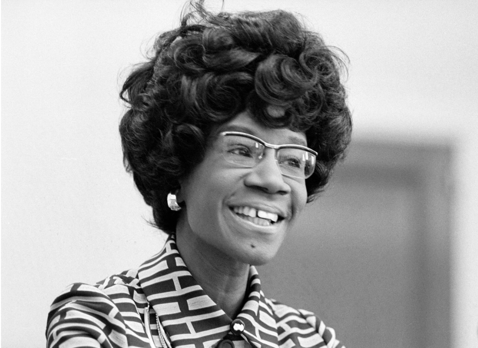

Paths to Power


Image Source: Prints and Photographs Division, Library of Congress

1937 (current site constructed); 1930 (first campus site in downtown Brooklyn)

Get in touch with the organization that contributed stories and archival information to this page! This organization can be reached at email@gmail.com.

At Brooklyn College, Shirley Chisholm majored in sociology and minored in Spanish, graduating cum laude in 1946. She was a debating champion, member of Delta Sigma Theta Sorority, and an active leader in student organizations such as the Harriett Tubman Society and Pan-American Club. When a social club refused to accept Black students, Chisholm founded an alternative club and was also a founding member of IPOTHIA (In Pursuit of the Highest in All). In a Political Science course, her professor, Louis Warsoff, recognized her political potential, setting the stage for her future activism.

1920-1987